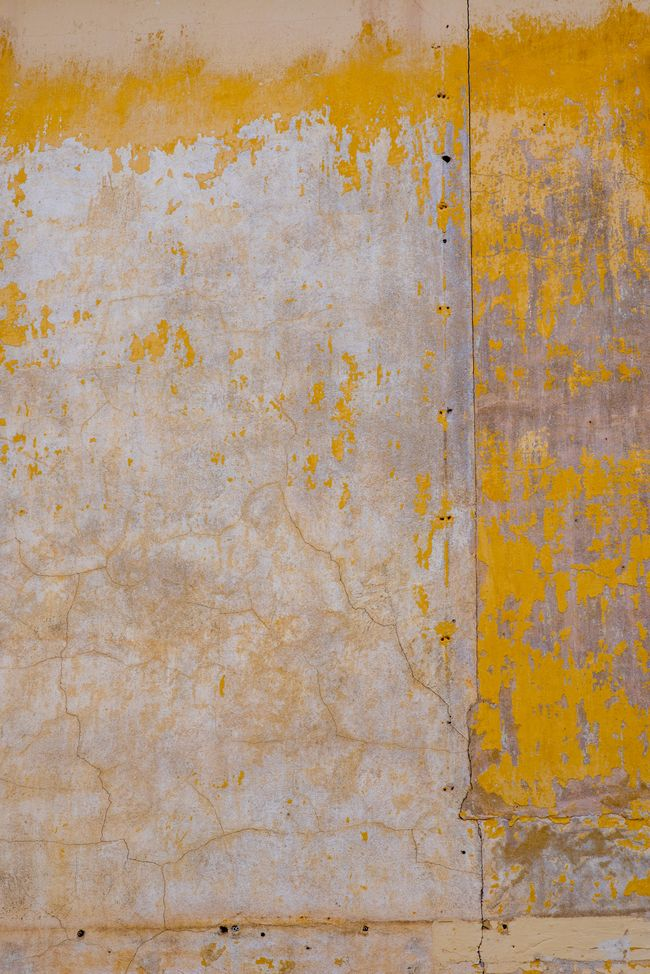
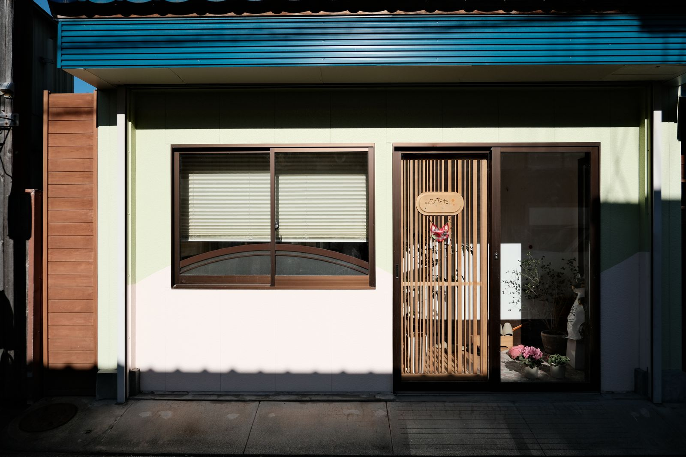
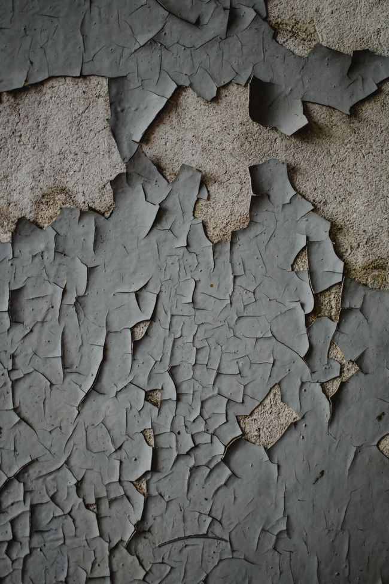
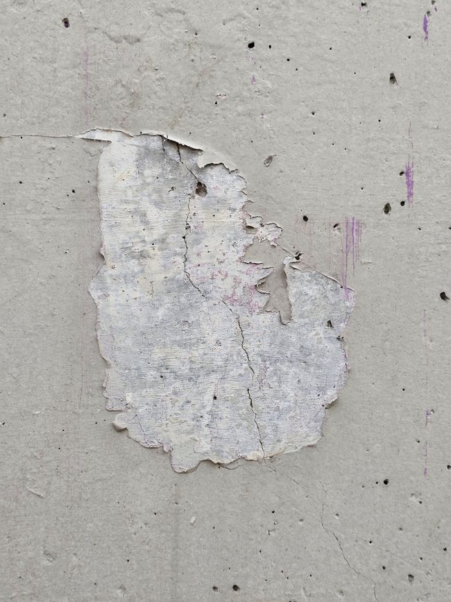
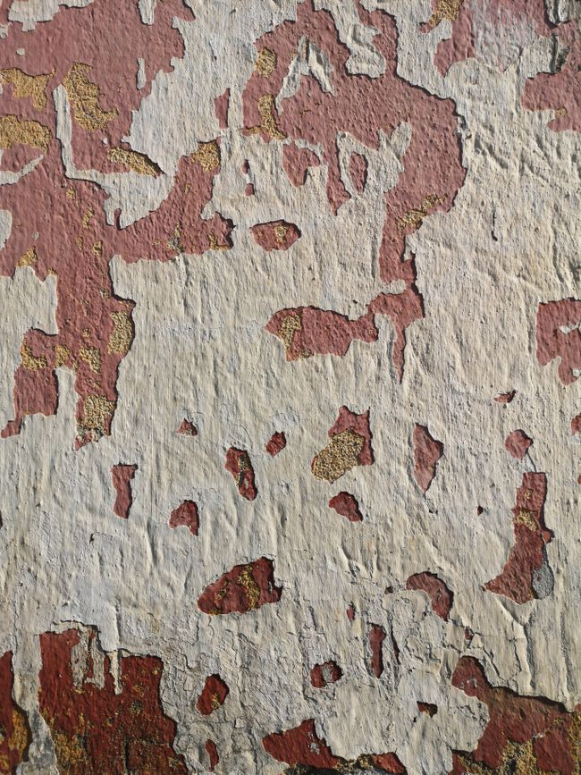
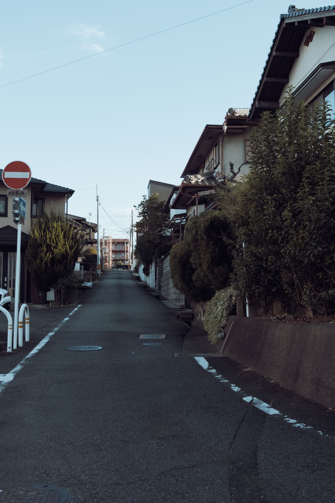
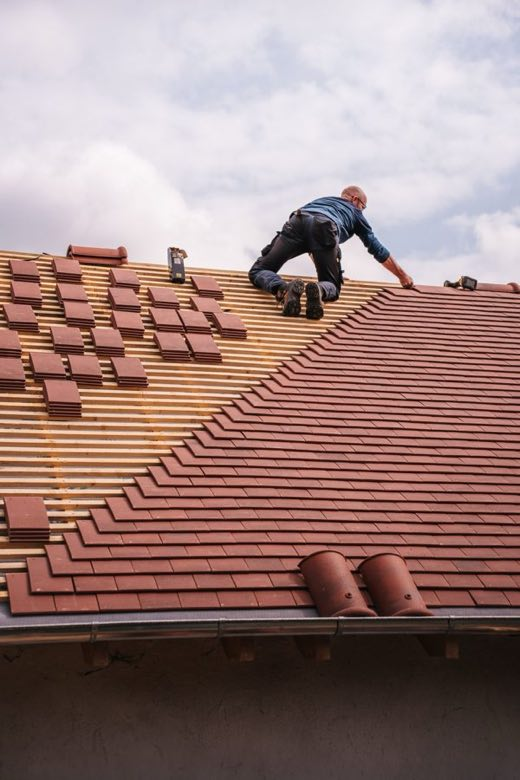
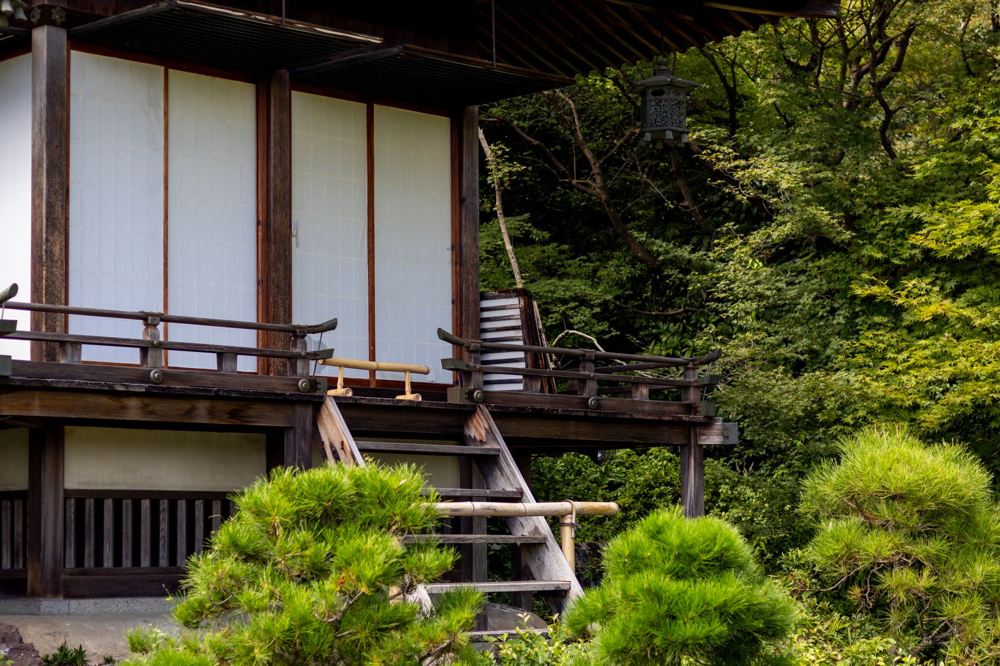
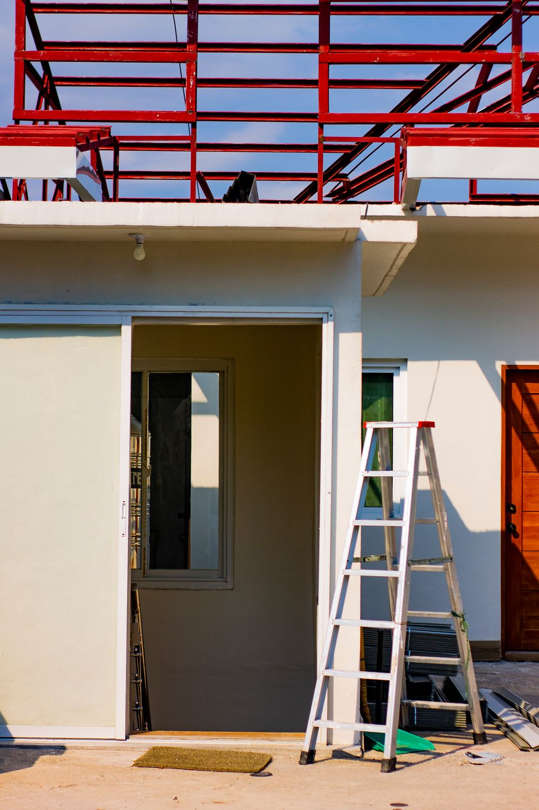

色あせ
日当たりのよい面から色が変わることがあります。
地元の塗装職人が状態を見て、工事の範囲と費用を書面でお伝えします。


日当たりのよい面から色が変わることがあります。

幅や位置を確かめて、補修の方法をご案内します。

壁に触れて粉がつくときは、塗膜の状態を見ます。

外壁や屋根からの水の通り道を調べます。
ひびや下地を確認してから塗り替えます。
塗装や部分補修をご相談いただけます。
台所や浴室の入れ替え。
壁紙や床の張り替え。

約10〜14日／税込80〜110万円

約14〜20日／税込100〜145万円

約4〜7日／税込25〜45万円
| 延床面積 | 外壁塗装（税込） |
|---|---|
| 25坪 | 70〜100万円 |
| 35坪 | 90〜125万円 |
| 45坪 | 110〜155万円 |
| 塗料 | 塗り替えのめやす |
|---|---|
| シリコン系 | 8〜12年 |
| フッ素系 | 12〜16年 |
建物の状態や立地、塗料の仕様で変わります。追加補修はお見積りに分けて記載します。
内容を持ち帰ってご検討ください。
施工範囲と項目別の金額を書面にまとめます。

工事中のご相談も同じ担当が伺います。
塗る場所を見積書で確認しながら決められました。個人の感想です（架空）。
工事の前に日程を教えてもらえて助かりました。個人の感想です（架空）。
現地確認とお見積りは無料です。
工事の範囲を確認し、生活への影響を事前にお伝えします。
〇〇市 〇〇町（架空）
000-0000-0000（架空）